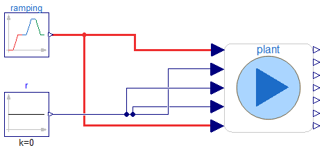
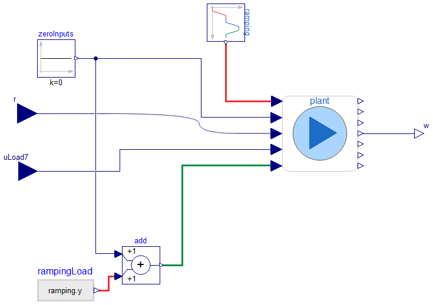

Models for simulation and linearization at multiple operating points through ramping of generation and load
Information
This package includes the main examples for linear analysis and simulation.
It includes three models and a sub-package.
Models:
- Example2.Analysis.Ramping, illustrates how to simulate multiple operating conditions by ramping g1 and Load9 in Example2.Base.Systems.sys
- Example2.Analysis.RampingRandomLoadAndInput, illustrates how to add multisine input signal and random load variations (in addition to ramping) to the system in Example2.Base.Systems.sys.
- Example2.Analysis.KchangeLinRamping, designed to linearize the model Example2.Base.Systems.sys at any point in time while considering ramping as in Example2.Analysis.Ramping
Sub-package: Example2.Analysis.AutomationFunctions
This sub-package contains three functions to automate the simulations of models 1 and 2, and to automate the linearization of model 3. See the documentation/info layer of each of the functions for more information.
Extends from Example2.Utilities.Icons.PackageWithSimAndLinModels (Package that contains both simulation and linearization models).
Package Content
| Name |
Description |
 Ramping Ramping
|
Model for simulation used to illustrate how ramping is applied to move the system to multiple operating points. |
| RampingRandomLoadAndInput
|
Model to perform blind estimation with default controller and re-design |
 KchangeLinRamping KchangeLinRamping
|
Model to perform blind estimation with default controller and re-design |
 AutomationFunctions AutomationFunctions
|
Provides functions for automation of simulation and linearization using the models of the upper layer package |
Model for simulation used to illustrate how ramping is applied to move the system to multiple operating points.

Information
This model illustrates how ramping is applied to move the system to multiple operating points.
To simulate this model and plot the results, execute the function Example2.Analysis.AutomationFunctions.simulate_and_plot_ramping , which sets up the adequate solver settings to minimize run time.
Extends from Modelica.Icons.Example (Icon for runnable examples).
Parameters
| Type | Name | Default | Description |
|---|
| PSS Parameters |
| PSS 1 |
| PerUnit | pss_vsmax | 0.2 | Max stabilizer output signal [1] |
| PerUnit | pss_vsmin | -0.2 | Min stabilizer output signal [1] |
| Real | pss1_Kw | 5 | Stabilizer gain [pu/pu] |
| Time | pss1_Tw | 5 | Wash-out time constant [s] |
| PSS 2 |
| Real | pss2_Kw | 5 | Stabilizer gain [pu/pu] |
| Time | pss2_Tw | 5 | Wash-out time constant [s] |
| PSS 3 |
| Real | pss3_Kw | 5 | Stabilizer gain [pu/pu] |
| Time | pss3_Tw | 5 | Wash-out time constant [s] |
| PSS 4 |
| Real | pss4_Kw | 5 | Stabilizer gain [pu/pu] |
| Time | pss4_Tw | 5 | Wash-out time constant [s] |
Modelica definition
model Ramping
extends Modelica.Icons.Example;
Example2.Base.Systems.sys plant(
g1(Rdroop=0.025),
t2pssin=1200,
t3pssin=2100,
g3(pss(
Kw=40,
Tw=10,
T1=0.5336,
T2=0.0942,
T3=0.5336,
T4=0.0942), sEXS(K=200)),
pss2_Kw=48.660727200594167,
pss2_Tw=0.355570139928890,
pss3_Kw=48.660727200594167,
pss3_Tw=0.355570139928890,
pss4_Kw=48.660727200594167,
pss4_Tw=0.355570139928890,
pss5_Kw=48.660727200594167,
pss5_Tw=0.355570139928890);
Modelica.Blocks.Sources.Constant r(k=0);
Example2.CustomComponents.TimedMultiRamp ramping(
rampA_height=0.2,
rampB_height=0.125,
rampC_height=-0.075,
rampD_height=-0.075);
parameter OpenIPSL.Types.PerUnit pss_vsmax=0.2 ;
parameter OpenIPSL.Types.PerUnit pss_vsmin=-0.2 ;
parameter Real pss1_Kw=5 ;
parameter OpenIPSL.Types.Time pss1_Tw=5 ;
parameter Real pss2_Kw=5 ;
parameter OpenIPSL.Types.Time pss2_Tw=5 ;
parameter Real pss3_Kw=5 ;
parameter OpenIPSL.Types.Time pss3_Tw=5 ;
parameter Real pss4_Kw=5 ;
parameter OpenIPSL.Types.Time pss4_Tw=5 ;
equation
connect(r.y, plant.uLoad7);
connect(ramping.y, plant.uPm);
connect(plant.uLoad9, ramping.y);
connect(plant.uPSS, r.y);
connect(plant.uAVRin, r.y);
end Ramping;
Model to perform blind estimation with default controller and re-design

Information
Main model used for simulation in [1] and [2].
To reproduce the results in Fig. 4 of [2], execute the function Example2.Analysis.AutomationFunctions.simulate_and_plot_inputs , which sets up the adequate solver settings to minimize run time.
Please note that running this model takes substantial time compared to example Example2.Analysis.Ramping, the reason is that both random load and probing signals are added to the model which results in an additional computation burden.
Extends from Modelica.Icons.Example (Icon for runnable examples).
Modelica definition
model RampingRandomLoadAndInput
extends Modelica.Icons.Example;
Example2.Base.Systems.sys plant(
g1(Rdroop=0.025),
t2pssin=1200,
t3pssin=2100,
t4pssin=3000,
t5pssin=3900,
g3(pss(
Kw=40,
Tw=10,
T1=0.5336,
T2=0.0942,
T3=0.5336,
T4=0.0942), sEXS(K=200)),
pss2_Kw=47.627315837430373,
pss2_Tw=0.380100702453755,
pss3_Kw=47.627315837430373,
pss3_Tw=0.380100702453755,
pss4_Kw=47.627315837430373,
pss4_Tw=0.380100702453755,
pss5_Kw=47.627315837430373,
pss5_Tw=0.380100702453755);
Modelica.Blocks.Sources.Constant zeroInputs(k=0);
inner Modelica.Blocks.Noise.GlobalSeed globalSeed(useAutomaticSeed=false);
Example2.CustomComponents.TimedInjectionOnOffTableData r;
Example2.CustomComponents.TimedNoiseInjection uL7(
samplePeriod=0.01,
sigma=0.1*0.25,
threshold=30.0);
Modelica.Blocks.Sources.RealExpression rampingLoad(y=ramping.y);
Modelica.Blocks.Math.Add add;
Example2.CustomComponents.TimedMultiRamp ramping(
rampA_height=0.2,
rampB_height=0.125,
rampC_height=-0.075,
rampD_height=-0.075);
equation
connect(zeroInputs.y, plant.uPSS);
connect(uL7.y, plant.uLoad7);
connect(rampingLoad.y,add. u2);
connect(add.y, plant.uLoad9);
connect(r.y, plant.uAVRin);
connect(ramping.y, plant.uPm);
connect(add.u1, zeroInputs.y);
end RampingRandomLoadAndInput;
Model to perform blind estimation with default controller and re-design

Information
Extends from Example2.Utilities.Icons.ModelForLinearization (nonlin4lin = for this model, you need to provide inputs or use it as is for linearization).
Connectors
Modelica definition
model KchangeLinRamping
extends Example2.Utilities.Icons.ModelForLinearization;
Modelica.Blocks.Interfaces.RealInput r;
Example2.Base.Systems.sys plant(
g1(Rdroop=0.025),
t2pssin=1200,
t3pssin=2100,
t4pssin=3000,
t5pssin=3900,
g3(pss(
Kw=40,
Tw=10,
T1=0.5336,
T2=0.0942,
T3=0.5336,
T4=0.0942), sEXS(K=200)),
pss2_Kw=47.627315837430373,
pss2_Tw=0.380100702453755,
pss3_Kw=47.627315837430373,
pss3_Tw=0.380100702453755,
pss4_Kw=47.627315837430373,
pss4_Tw=0.380100702453755,
pss5_Kw=47.627315837430373,
pss5_Tw=0.380100702453755);
Modelica.Blocks.Sources.Constant zeroInputs(k=0);
Modelica.Blocks.Sources.RealExpression rampingLoad(y=ramping.y);
Modelica.Blocks.Math.Add add;
Modelica.Blocks.Interfaces.RealOutput w;
Modelica.Blocks.Interfaces.RealInput uLoad7;
Example2.CustomComponents.TimedMultiRamp ramping(
rampA_height=0.2,
rampB_height=0.125,
rampC_height=-0.075,
rampD_height=-0.075);
equation
connect(zeroInputs.y, plant.uPSS);
connect(rampingLoad.y,add. u2);
connect(add.y, plant.uLoad9);
connect(r, plant.uAVRin);
connect(plant.w, w);
connect(add.u1, zeroInputs.y);
connect(plant.uLoad7, uLoad7);
connect(plant.uPm, ramping.y);
end KchangeLinRamping;
Automatically generated Fri Mar 8 12:53:47 2024.
 Example2.Analysis.Ramping
Example2.Analysis.Ramping Example2.Analysis.KchangeLinRamping
Example2.Analysis.KchangeLinRamping